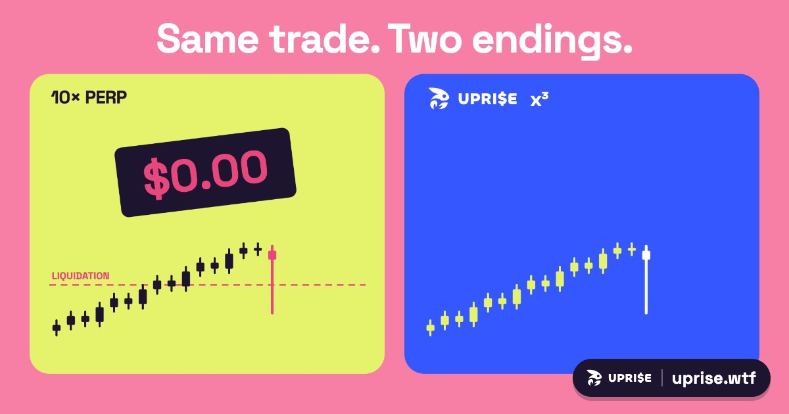

Power perpetuals on NEAR, with no liquidation
Uprise lets you bet on a price rising with up to ten times the curve of the price itself, and a sudden dip can't knock you out. This page explains how that works, what it costs, and who earns from it.
Same trade, two endings
With normal leverage, say a 10× long, a short wick below your liquidation price closes the position and you lose everything, even when the price comes right back a minute later. With Uprise, the same wick only moves your position's value for a moment. There is no price at which it gets closed.

The Curve Long: a power perpetual
On the 🐮 Trade tab you buy a Curve Long and choose its strength, from x¹ to x¹⁰. The value follows the price to that power: x¹ moves like the price, x¹⁰ ten times as steeply. This kind of position is called a power perpetual.
| NEAR moves | x¹ | x³ | x⁵ |
|---|---|---|---|
| +10% | +10% | +33% | +61% |
| +25% | +25% | +95% | +205% |
| −10% | −10% | −27% | −41% |
Before the melt. Steeper strengths win more on the way up and lose more on the way down.
Why a wick can't liquidate you
Uprise positions have no liquidation price. A dip lowers the value, and if the price comes back before you sell, so does your position. Dips, wicks and crashes can't close it for you.
All positions share one pool. If traders' claims ever exceeded the pool, everyone would be paid pro rata, so the contract can never owe more than it holds.
The price you pay is time: the melt
Instead of a liquidation price, each position slowly melts: it loses a little value every moment. This is the funding. Steeper strengths melt faster, and the rate rises as more of the vault is in use. The position never expires on a date, it fades out gradually, which is why we call it a continuous-expiry power perpetual.
So a Curve Long is a bet that the price rises within a time window. A price that goes sideways costs you the melt.
The Crab Vault: earn what traders pay
On the 🦀 Yield tab you can be on the other side. Liquidity providers deposit USDC into the Crab Vault, which takes the opposite side of every Curve Long. The melt from traders' positions flows into the vault: 90% to depositors, 10% to the exchange.
The vault holds NEAR alongside its USDC and rebalances automatically, so price moves mostly cancel out. What's left is the funding. It's the same idea as the "Crab" strategy on Ethereum. The 📊 Analytics tab shows the money moving between traders, the vault and depositors live.
Start in a minute
- Demo: open uprise.wtf. You get $1,000 of play money and a replay of real NEAR price history. No wallet needed.
- Live on NEAR testnet: switch to Live and tap Create custodial wallet. You get a NEAR account with 1,000 test USDC, and Uprise pays the gas through meta-transactions (NEP-366).
- Already on NEAR? Connect Meteor, MyNearWallet or Intear. The wallet sheet has a button for 1,000 test USDC.
- From another chain: cross-chain deposits through NEAR Intents (mainnet).
FAQ
What is Uprise?
A trading app on NEAR for betting that a price will rise, without a liquidation price. You pick a strength from x¹ to x¹⁰ and your position grows faster the more the price goes up. It runs on NEAR testnet as a beta, with a demo mode that uses play money.
What is a power perpetual?
A position whose value follows the price raised to a power. At x³, a 10% rise makes it worth about 33% more; at x⁵ about 61% more. It has no expiry date and no liquidation price.
Can I get liquidated on Uprise?
No. A dip or wick can't close an Uprise position. If the price falls your position is worth less, and it recovers if the price comes back while you still hold it.
What does the melt (funding) cost?
A position melts a little every moment. Steeper strengths melt faster, and the rate rises when more of the vault is in use. The app shows the current funding per day on your position before and after you buy.
Where does the Crab Vault yield come from?
From the melt of traders' positions: 90% goes to vault depositors, 10% to the exchange. The vault hedges with NEAR, so price moves mostly cancel out.
Do I need NEAR for gas?
No. Wallets created in the app are gas-free: Uprise relays every action as a meta-transaction. Meteor, MyNearWallet and Intear users approve each transaction in their wallet.
Is Uprise live with real money?
Not yet. It runs on NEAR testnet with test USDC, and every new wallet gets 1,000 test USDC. Demo mode needs no wallet at all.
What can I lose?
Up to what you put in. A steeper strength falls faster when the price drops (x³: about −27% on a 10% drop, x⁵: about −41%), and the melt reduces the position over time.
The math, simulators and research behind Uprise are in the Uprise lab. Code on GitHub. Testnet beta, not financial advice.